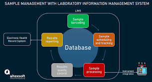

Database Systems Components Page
links:

A database consists of:
1-Database structure Which is conceived as a single entity consisting of a collection of interrelated files.
2-Repository Which contains the rules under which users can access the data and the rules under which the data is organised ie metadata.
3-End users Who access the database.
4-Interfaces Which are the various ways an end user may access the data via display terminals, phone links from remote terminals, touch screens, bar code readers, by using voice commands, touch pads, graphics selection, selections from menus with keyboard or mouse, keying in commands or scanning cards. The interface also is the form in which the information is delivered to the end user eg graph, printed report, graphical display.
5-Application programs Which are used to perform the main operations on the data ie create, modify, delete and retrieve. Application programs also combine the data in meaningful ways to produce reports.
6-Database Management System (DBMS) Which is the collection of programs that manages the database structure and interprets the rules in the repository and also manages user access in multi-user systems.
7-Computer Aided Software Engineering Tools (CASE tools) Are also considered to be part of the database environment. These are automated tools to assist with the design of systems and databases.
8-Database Administrators (DBA) Manage the DBMS and are responsible for the overall information resources of an organisation. You will look at the role of the DBA more fully in a later section.
9-System Developers Include systems analysts and programmers. You will look at the role of each of these in other modules. Both use CASE tools to assist in the development of application programs.